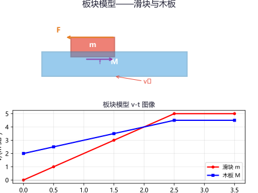
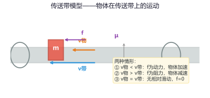
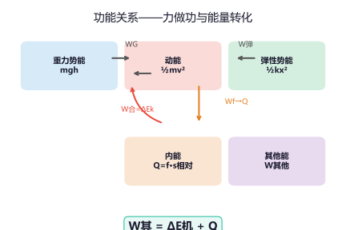

专题一：匀变速直线运动
直线运动
3s 内汽车在运动：x₃ = v₀t+½at² = 10×3+½×(−2)×9 = 30−9 = 21 m。
6s 时汽车已停止 1s，实际运动 5s：x₆ = v₀t₀+½at₀² = 10×5+½×(−2)×25 = 50−25 = 25 m。
或者用末速 0：v²−v₀²=2ax → x= −100/(−4)=25m。
第 3s 内：5 = ½a×5 + v₀ → 2.5a + v₀ = 5 …①
第 7s 内：9 = ½a×13 + v₀ → 6.5a + v₀ = 9 …②
②−①：4a = 4 → a = 1 m/s²，代入①：v₀=5−2.5=2.5 m/s
专题二：牛顿运动定律
牛顿定律核心牛顿第一定律（惯性定律）：一切物体总保持匀速直线运动状态或静止状态，除非有外力迫使它改变这种状态。惯性是物体的固有属性，质量是惯性大小的唯一量度。
牛顿第二定律：物体的加速度与合外力成正比，与质量成反比。
F_合 = ma（矢量式，加速度方向与合外力方向相同）。
解题步骤：选对象→作受力分析→正交分解→列方程。
牛顿第三定律：作用力和反作用力等大反向、同一直线、作用在不同物体上（与平衡力不同）。
超重与失重：
① 超重：a 向上，N > mg（如电梯加速上升或减速下降）
② 失重：a 向下，N < mg（如电梯加速下降或减速上升）
③ 完全失重：a = g 向下，N = 0（如自由落体、竖直上抛中的物体）

a = F_合/m = 4/5 = 0.8 m/s²，方向向右。
N = m(g+a) = 60×(10+0.5) = 630 N（超重状态）。（g取10）
竖直方向：N + Fsin37° = mg → N = mg−Fsin37° = 20−6 = 14N。
f = μN = 0.2×14 = 2.8N。
a = (10×0.8−2.8)/2 = (8−2.8)/2 = 2.6 m/s²。
专题三：板块模型
板块模型难点模型特点：一个滑块（小物块）放在一个长木板（或长平板）上，两者之间有摩擦，且木板可能与地面也有摩擦。通过分析两者受力判断运动状态。
解题核心思路：
① 判断运动形式：两者是否能一起运动？是否会发生相对滑动？
② 当两者之间的摩擦力达到最大静摩擦时即将发生相对滑动。
③ 临界条件：对整体 F − μ₂(M+m)g = (M+m)a，对物块 μ₁mg = ma（最大静摩擦提供加速度）。
④ 若外力 F 使得物块所需加速度超过最大静摩擦能提供的加速度，则发生相对滑动。
无外力作用的情况：滑块有初速度滑上木板，滑块减速、木板加速，最终共速一起匀速或减速。系统动量守恒（地面光滑时）：m·v₀ = (M+m)·v_共。

假设一起运动：a = F/(M+m)=12/3=4m/s²。
滑块所需摩擦力 f = ma = 1×4 = 4N = f_max（刚好达到最大静摩擦）。
尚未相对滑动。a_块 = a_板 = 4 m/s²。
若 F=15N，则整体 a=5m/s²，所需 f=5N>4N → 相对滑动。
滑块 a₁=μg=4m/s²，木板 a₂=(F−μmg)/M=(15−4)/2=5.5m/s²。
（2）能量守恒：Q = ½mv₀² − ½(M+m)v_共²
= ½×1×16 − ½×4×1 = 8−2 = 6 J。
（也可用 Q = μmg·s_相对 计算）
注意木板受滑块摩擦力向前，地面摩擦力向后。
先判断能否共速，设经 t 秒共速 v：
v₀+a₁t = 0+a₂t → 4−3t = (−0.33)t → 4 = 3t−0.33t = 2.67t → t≈1.5s。
v_共 = 4−3×1.5 = −0.5，说明已经反向：实际上滑块在 t₂=4/3≈1.33s 时已相对木板停止。
计算复杂，直接使用动量定理：取向右为正。
滑块：−μmg·t = m(v−v₀)，木板：[μmg−μ₂(M+m)g]·t = Mv。
联立解得 t≈1.0s，v≈1.0m/s。再用运动学求相对位移。
专题四：传送带模型
传送带难点模型特点：物体在传送带上受摩擦力做匀变速运动，直到与传送带共速。
水平传送带：
① 物块轻放（v₀=0）：做匀加速 a=μg 直到 v_物=v_带。
② 物块有初速度：需比较 v₀ 与 v_带大小——v₀
③ 关键量：加速/减速时间 t = |v_带−v₀|/(μg)，位移 x = v₀t±½μgt²。
倾斜传送带：
① 向上传送时需 μ≥tanθ 才能将物体传送上去；
② 向下传送时若 μ
多过程分析：共速后若无相对滑动趋势（水平传送带）则匀速；若倾斜传送带上 μ 
位移 x₁=½at₁²=½×2×4=4m。
剩余距离 L−x₁=12m 以 v=4m/s 匀速，t₂=12/4=3s。
总时间 t=t₁+t₂=5 s。
若 L=3m（短传送带），则全程加速到不了 v：L=½at²→t=√3≈1.73s。
加速时间 t=(5−3)/2=1s，位移 x=3×1+½×2×1=4m。
之后以 5m/s 匀速。总时间取决于传送带长度。
a = (μmg cosθ−mg sinθ)/m = g(μ cosθ−sinθ)
= 10×(0.866×0.866−0.5) = 10×(0.75−0.5)=2.5m/s²。
加速到 v=4m/s：t₁=v/a=1.6s，x₁=½at₁²=½×2.5×2.56=3.2m。
剩下的 L−x₁=6.8m 匀速：t₂=6.8/4=1.7s。
总时间 t=3.3 s。
专题五：连接体问题
连接体解题方法：整体法与隔离法结合使用。
① 整体法：将多个物体视为一个整体，求整体的加速度（只考虑外力，不考虑内力）。
② 隔离法：将某个物体单独分析，求物体间的作用力（即内力）。
③ 两者配合使用：先整体求加速度，再隔离求内力。
常见题型：
① 水平面上用绳子连接的多个物体；
② 定滑轮两端悬挂的物体（注意绳子的拉力相等、加速度大小相等）；
③ 光滑斜面上叠放的物体（判断是否相对滑动，临界条件与板块模型类似）；
④ 弹簧连接体（涉及弹性势能与简谐振动）。

隔离 m₁：T = m₁a = 2×2 = 4 N。（或隔离 m₂：F−T=m₂a→T=F−m₂a=10−6=4N）
对 m₁：T = m₁a …①
对 m₂：m₂g−T = m₂a …②
①代入②：m₂g−m₁a = m₂a → a = m₂g/(m₁+m₂) = 10/5 = 2 m/s²。
T = m₁a = 4×2 = 8 N。
最大静摩擦 f_max = μ·m₂g = 0.4×2×10 = 8N。
m₂ 的最大加速度 a_max = f_max/m₂ = 8/2 = 4m/s²。
整体：F_max = (m₁+m₂)a_max = 5×4 = 20 N。
专题六：曲线运动与圆周运动
曲线运动重点运动的合成与分解：合运动与分运动具有等时性、独立性。速度、加速度、位移均为矢量。小船渡河问题：最短时间船头垂直对岸，最短位移需调整船头方向。
平抛运动：水平方向匀速直线 x=v₀t，竖直方向自由落体 y=½gt²。
合速度 v=√(v₀²+(gt)²)，方向 tanθ=gt/v₀。合位移 s=√(x²+y²)。
平抛运动的时间由高度决定：t=√(2h/g)，与初速度无关。
圆周运动：
线速度 v = ωr，角速度 ω = 2π/T = 2πf。
向心加速度 a = v²/r = ω²r。
向心力 F = mv²/r = mω²r（方向指向圆心）。
竖直面内圆周运动：
① 轻绳模型（最高点临界 v_min = √(gr)）
② 轻杆模型（最高点 v_min = 0）
③ 过山车/轨道模型（同轻绳，最高点轨道压力 N+mg=mv²/r）


x = v₀t = 10×2 = 20 m。
落地速度 v = √(v₀²+(gt)²)=√(100+400)=√500≈22.36 m/s。
T = m(v²/L−g) = 0.5×(9/1−10) = 0.5×(−1) = −0.5N。
T为负说明绳子不可能提供支持力，小球无法以3m/s过最高点。
临界速度 v_min = √(gL) = √10 ≈ 3.16 m/s。
实际需要 v ≥ 3.16m/s 才能完成完整的圆周运动。
v²/L=4/0.6≈6.67，g=10。
F=0.2×(6.67−10)=−0.666N。
负号表示杆对球的作用力向上（支持力），大小为 0.666N。
专题七：功和能
功能关系核心功：W = F·s·cosθ（θ 为 F 与 s 的夹角）。θ<90°做正功，θ>90°做负功，θ=90°不做功。
摩擦力可以做正功、负功或不做功。一对滑动摩擦力总功等于系统产生的内能 Q=f·s_相对。
动能定理：适用于一切过程，无需考虑中间细节。步骤：确定初末状态→列出所有力的功→等于动能变化。
机械能守恒：只有重力或弹力做功时，动能与势能之和保持不变。E₁ = E₂ 或 ΔE_k = −ΔE_p。
功能关系网络：
① WG = −ΔE_p（重力做功=重力势能减少量）
② W弹 = −ΔE_弹性势能
③ W合 = ΔE_k（动能定理）
④ W其 = ΔE_机（其他力做功=机械能变化）
⑤ Wf一对 = Q = f·s_相对（摩擦生热）

v = √(2gh) = √(2×10×5) = √100 = 10 m/s。
动能定理：mgh − μmgcosθ·L = ½mv²。
1×10×5 − 0.2×1×10×0.866×10 = ½×1×v²。
50 − 17.32 = ½v² → v² = 65.36 → v≈8.08 m/s。
（验证：用机械能损失也可以）
动能定理：½kx₀² = ½mv² → v = x₀·√(k/m)。
−0.3×2×10×s = −½×2×16 → −6s = −16 → s = 2.67 m。
v_B = √(2gh) = √36 = 6 m/s。
BC 段：动能定理 −μmgL = ½mv_C² − ½mv_B²。
−0.2×0.5×10×3 = ½×0.5v_C² − ½×0.5×36
−3 = 0.25v_C² − 9 → 0.25v_C² = 6 → v_C²=24 → v_C≈4.9 m/s >0。
∴ 能到达 C 点，速度为 4.9 m/s。